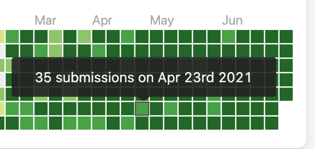

12 de Março, 2026
Como organizar um projeto individual de Front-End do zero
Metodologia que sigo para planear, estruturar e executar projetos sozinho com qualidade.
Ler mais →Técnico de Gestão e Programação de Sistemas Informáticos com foco em desenvolvimento Front-End. Crio sites modernos, responsivos e com código limpo — alinhados com as tuas necessidades.
Conhece o meu percurso, as minhas competências e como posso ajudar-te.
Sou finalista do curso Técnico de Gestão e Programação de Sistemas Informáticos, onde ao longo de 3 anos adquiri competências sólidas em programação, bases de dados, redes e desenvolvimento web.
O meu foco está no desenvolvimento Front-End — criar interfaces limpas, responsivas e acessíveis que proporcionem uma excelente experiência ao utilizador. Acredito que um bom site começa com HTML e CSS bem escritos.
Quando trabalho sozinho, sigo uma metodologia organizada: planeamento, estruturação semântica, design minimalista e código comentado — tudo para garantir qualidade e facilidade de manutenção.

Introdução à lógica de programação, algoritmia e fundamentos de sistemas informáticos.
Aprendizagem de HTML, CSS, JavaScript, PHP e SQL. Primeiros projetos práticos full-stack.
Foco em Front-End, design responsivo, acessibilidade e entrega do projeto final de curso.
Soluções pensadas para destacar a tua presença online com qualidade e profissionalismo.
Criação de layouts modernos e intuitivos com foco na experiência do utilizador, seguindo princípios de design minimalista.
Implementação de sites responsivos com HTML5 semântico, CSS3 avançado e otimização para todos os dispositivos.
Garantia de que o teu site funciona perfeitamente em telemóveis, tablets e desktops — sem quebras de layout.
Código limpo, carregamento rápido e boas práticas para garantir uma navegação fluida e sem frustrações.
Suporte contínuo para manter o teu site atualizado, seguro e com o melhor desempenho possível.
Código bem estruturado, comentado e documentado para facilitar futuras manutenções e colaborações.
Uma seleção de trabalhos onde aplico as minhas competências de Front-End.
Site institucional responsivo com design dark mode e formulário de contacto integrado.
Interface administrativa com visualização de dados e painel de controlo interativo.
Blog minimalista com sistema de categorias, pesquisa e artigos dinâmicos.
Protótipo de loja online com catálogo de produtos, carrinho e checkout.
Galeria responsiva com lightbox e animações suaves para apresentação de trabalhos visuais.
Formulário dividido em etapas com validação e feedback visual ao utilizador.
Partilho conhecimentos, aprendizagens e dicas sobre desenvolvimento web.
Metodologia que sigo para planear, estruturar e executar projetos sozinho com qualidade.
Ler mais →Reflexão sobre a importância de dominar as bases da web antes de partir para frameworks.
Ler mais →Guia prático sobre design em dark mode — contraste, cores e acessibilidade.
Ler mais →Preenche o formulário ou utiliza os Contactos abaixo. Responderei o mais breve possível.
Respostas às dúvidas mais comuns sobre o meu trabalho e processo.